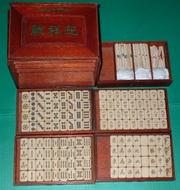
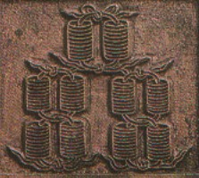
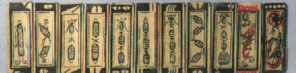
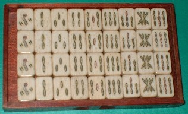
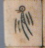

Tile colection 珍奇牌。
（２４）青 [虫夫] 牌
青[虫夫]（チンフー）と読む。青[虫夫]は、直接的には蜉蝣（かげろう）の幼虫＝青虫の意。そして１索がその青[虫夫]（チンフー）の図柄になっているので青[虫夫]牌と呼ばれる。
ではなぜ、よりにもよって青虫が１索の図柄となったのかといえば、それは次のような経過による。
馬吊の時代、索子の図柄は銭束であった。
それが簡略化されて、次のような図柄となった。
上記の図柄で１索の銭束の両側に垂れ下がっているのは、銭束を縛っているヒモ。しかしこの１索の図柄は、なんとなく青虫＝青[虫夫]（チンフー）が揺れ動いているようにも見える。(^ー^； そこで図柄は自然に青[虫夫]に変化した。
しかし１索が青[虫夫]に変化したのは、馬吊（＝紙牌）の１索が青虫に似ていたと云うだけの理由ではない。実は青[虫夫]は、中国ではお金に縁のある虫であったからである。
そして索子のもともとの図柄が銅銭の束となれば、青[虫夫]にはぴったり。そこで１索は青[虫夫]が揺れうごいている図柄となった。
しかし時代が進むにつれて青[虫夫]牌は淘汰され、製造されることはなくなった。そこで問題になるのが、この青[虫夫]がさらに変化して鳥の図柄になったのか、あるいは並行的に鳥の図柄も採用されていたが、鳥が優勢となり、青「虫夫」の図柄が駆逐されてしまったのかという点である。
よくよく見ると１索の図柄は、幼鳥が羽根をばたばたさせている姿に見えなくもない。麻雀博物館の所蔵する牌のも、どうみても青[虫夫]というより鳥に近い図柄もののがある。そこで青[虫夫]がさらに鳥に変化したという可能性は大いにある。博物館所蔵牌↓
とはいうものの、青[虫夫]牌と同時期に鳥図柄牌も存在していたようなので、「青[虫夫]図柄が鳥図柄に変化した」と断定してしまうこともできない。この辺り、まだ今後の研究を要するところである。
